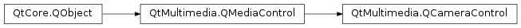

QCameraControl¶
Detailed Description¶
The
PySide2.QtMultimedia.QCameraControlclass is an abstract base class for classes that control still cameras or video cameras.This service is provided by a
PySide2.QtMultimedia.QMediaServiceobject via QMediaService::control(). It is used byPySide2.QtMultimedia.QCamera.The interface name of
PySide2.QtMultimedia.QCameraControlisorg.qt-project.qt.cameracontrol/5.0as defined inQCameraControl_iid().
-
class
PySide2.QtMultimedia.QCameraControl([parent=nullptr])¶ Parameters: parent – PySide2.QtCore.QObjectConstructs a camera control object with
parent.
-
PySide2.QtMultimedia.QCameraControl.PropertyChangeType¶ Constant Description QCameraControl.CaptureMode Indicates the capture mode is changed. QCameraControl.ImageEncodingSettings Image encoder settings are changed, including resolution. QCameraControl.VideoEncodingSettings Video encoder settings are changed, including audio, video and container settings. QCameraControl.Viewfinder Viewfinder is changed. QCameraControl.ViewfinderSettings Viewfinder settings are changed.
-
PySide2.QtMultimedia.QCameraControl.canChangeProperty(changeType, status)¶ Parameters: - changeType –
PySide2.QtMultimedia.QCameraControl.PropertyChangeType - status –
PySide2.QtMultimedia.QCamera.Status
Return type: PySide2.QtCore.boolReturns true if backend can effectively apply changing camera properties of
changeTypetype while the camera state is QCamera::Active and camera status matchesstatusparameter.If backend doesn’t support applying this change in the active state, it will be stopped before the settings are changed and restarted after. Otherwise the backend should apply the change in the current state, with the camera status indicating the progress, if necessary.
- changeType –
-
PySide2.QtMultimedia.QCameraControl.captureMode()¶ Return type: PySide2.QtMultimedia.QCamera.CaptureModesReturns the current capture mode.
-
PySide2.QtMultimedia.QCameraControl.captureModeChanged(mode)¶ Parameters: mode – PySide2.QtMultimedia.QCamera.CaptureModes
-
PySide2.QtMultimedia.QCameraControl.error(error, errorString)¶ Parameters: - error –
PySide2.QtCore.int - errorString – unicode
- error –
-
PySide2.QtMultimedia.QCameraControl.isCaptureModeSupported(mode)¶ Parameters: mode – PySide2.QtMultimedia.QCamera.CaptureModesReturn type: PySide2.QtCore.boolReturns true if the capture
modeis suported.
-
PySide2.QtMultimedia.QCameraControl.setCaptureMode(arg__1)¶ Parameters: arg__1 – PySide2.QtMultimedia.QCamera.CaptureModesSets the current capture
mode.The capture mode changes are synchronous and allowed in any camera state.
If the capture mode is changed while camera is active, it’s recommended to change status to
QCamera.LoadedStatusand start activating the camera in the next event loop with the status changed toQCamera.StartingStatus. This allows the capture settings to be applied before camera is started. Than change the status to QCamera::StartedStatus when the capture mode change is done.
-
PySide2.QtMultimedia.QCameraControl.setState(state)¶ Parameters: state – PySide2.QtMultimedia.QCamera.StateSets the camera
state.State changes are synchronous and indicate user intention, while camera status is used as a feedback mechanism to inform application about backend status. Status changes are reported asynchronously with
QCameraControl.statusChanged()signal.See also
PySide2.QtMultimedia.QCameraControl.state()QCamera.State
-
PySide2.QtMultimedia.QCameraControl.state()¶ Return type: PySide2.QtMultimedia.QCamera.StateReturns the state of the camera service.
See also
PySide2.QtMultimedia.QCameraControl.setState()QCamera.state
-
PySide2.QtMultimedia.QCameraControl.stateChanged(arg__1)¶ Parameters: arg__1 – PySide2.QtMultimedia.QCamera.State
-
PySide2.QtMultimedia.QCameraControl.status()¶ Return type: PySide2.QtMultimedia.QCamera.StatusReturns the status of the camera service.
See also
QCamera.state
-
PySide2.QtMultimedia.QCameraControl.statusChanged(arg__1)¶ Parameters: arg__1 – PySide2.QtMultimedia.QCamera.Status
© 2018 The Qt Company Ltd. Documentation contributions included herein are the copyrights of their respective owners. The documentation provided herein is licensed under the terms of the GNU Free Documentation License version 1.3 as published by the Free Software Foundation. Qt and respective logos are trademarks of The Qt Company Ltd. in Finland and/or other countries worldwide. All other trademarks are property of their respective owners.